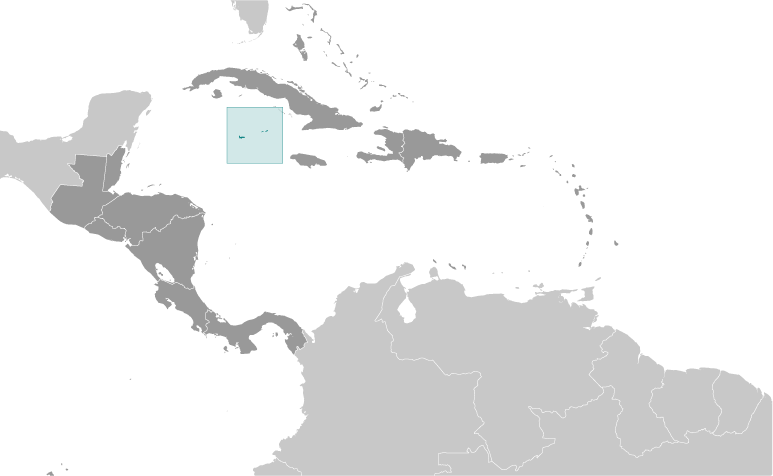

Central America and Caribbean :: CAYMAN ISLANDS
Introduction :: CAYMAN ISLANDS
-
The Cayman Islands were colonized from Jamaica by the British during the 18th and 19th centuries and were administered by Jamaica after 1863. In 1959, the islands became a territory within the Federation of the West Indies. When the Federation dissolved in 1962, the Cayman Islands chose to remain a British dependency. The territory has transformed itself into a significant offshore financial center.
Geography :: CAYMAN ISLANDS
-
Caribbean, three-island group (Grand Cayman, Cayman Brac, Little Cayman) in Caribbean Sea, 240 km south of Cuba and 268 km northwest of Jamaica19 30 N, 80 30 WCentral America and the Caribbeantotal: 264 sq kmland: 264 sq kmwater: 0 sq kmcountry comparison to the world: 2111.5 times the size of Washington, DC0 km160 kmterritorial sea: 12 nmexclusive fishing zone: 200 nmtropical marine; warm, rainy summers (May to October) and cool, relatively dry winters (November to April)low-lying limestone base surrounded by coral reefsmean elevation: NAelevation extremes: lowest point: Caribbean Sea 0 mhighest point: 1 km SW of The Bluff on Cayman Brac 50 mfish, climate and beaches that foster tourismagricultural land: 11.2%arable land 0.8%; permanent crops 2.1%; permanent pasture 8.3%forest: 52.9%other: 35.9% (2011 est.)NAmajority of the population resides on Grand Caymanhurricanes (July to November)no natural freshwater resources; drinking water supplies are met by reverse osmosis desalination plantsimportant location between Cuba and Central America
People and Society :: CAYMAN ISLANDS
-
58,441note: most of the population lives on Grand Cayman (July 2017 est.)country comparison to the world: 205noun: Caymanian(s)adjective: Caymanianmixed 40%, white 20%, black 20%, expatriates of various ethnic groups 20%English (official) 90.9%, Spanish 4%, Filipino 3.3%, other 1.7%, unspecified 0.1% (2010 est.)Protestant 67.8% (includes Church of God 22.6%, Seventh Day Adventist 9.4%, Presbyterian/United Church 8.6%, Baptist 8.3%, Pentecostal 7.1%, non-denominational 5.3%, Anglican 4.1%, Wesleyan Holiness 2.4%), Roman Catholic 14.1%, Jehovah's Witness 1.1%, other 7%, none 9.3%, unspecified 0.7% (2010 est.)0-14 years: 18% (male 5,298/female 5,224)15-24 years: 12.41% (male 3,601/female 3,654)25-54 years: 42.52% (male 12,123/female 12,727)55-64 years: 14.47% (male 4,030/female 4,427)65 years and over: 12.59% (male 3,425/female 3,932) (2017 est.)total: 40 yearsmale: 39.3 yearsfemale: 40.7 years (2017 est.)country comparison to the world: 502.01% (2017 est.)country comparison to the world: 4812 births/1,000 population (2017 est.)country comparison to the world: 1685.8 deaths/1,000 population (2017 est.)country comparison to the world: 17213.8 migrant(s)/1,000 populationnote: major destination for Cubans trying to migrate to the US (2017 est.)country comparison to the world: 5majority of the population resides on Grand Caymanurban population: 100% of total population (2017)rate of urbanization: 0.98% annual rate of change (2015-20 est.)GEORGE TOWN (capital) 31,000 (2014)at birth: 1.02 male(s)/female0-14 years: 1.01 male(s)/female15-24 years: 0.98 male(s)/female25-54 years: 0.95 male(s)/female55-64 years: 0.91 male(s)/female65 years and over: 0.89 male(s)/femaletotal population: 0.95 male(s)/female (2016 est.)total: 5.9 deaths/1,000 live birthsmale: 6.7 deaths/1,000 live birthsfemale: 5 deaths/1,000 live births (2017 est.)country comparison to the world: 168total population: 81.3 yearsmale: 78.6 yearsfemale: 84.1 years (2017 est.)country comparison to the world: 281.85 children born/woman (2017 est.)country comparison to the world: 147improved:urban: 97.4% of populationrural: NAtotal: 97.4% of populationunimproved:urban: 2.6% of populationrural: NAtotal: 2.6% of population (2015 est.)improved:urban: 95.6% of populationtotal: 95.6% of populationunimproved:urban: 4.4% of populationtotal: 4.4% of population (2015 est.)NANANAnote: active local transmission of Zika virus by Aedes species mosquitoes has been identified in this country (as of August 2016); it poses an important risk (a large number of cases possible) among US citizens if bitten by an infective mosquito; other less common ways to get Zika are through sex, via blood transfusion, or during pregnancy, in which the pregnant woman passes Zika virus to her fetus (2016)NAdefinition: age 15 and over has ever attended schooltotal population: 98.9%male: 98.7%female: 99% (2007 est.)total: 13.8%male: 16.4%female: 11.4% (2015 est.)country comparison to the world: 86
Government :: CAYMAN ISLANDS
-
conventional long form: noneconventional short form: Cayman Islandsetymology: the islands' name comes from the native Carib word "caiman," describing the marine crocodiles living thereoverseas territory of the UKparliamentary democracy (Legislative Assembly); self-governing overseas territory of the UKname: George Town (on Grand Cayman)geographic coordinates: 19 18 N, 81 23 Wtime difference: UTC-5 (same time as Washington, DC, during Standard Time)6 districts; Bodden Town, Cayman Brac and Little Cayman, East End, George Town, North Side, West Baynone (overseas territory of the UK)Constitution Day, first Monday in July (1959)several previous; latest approved 10 June 2009, entered into force 6 November 2009 (The Cayman Islands Constitution Order 2009) (2016)English common law and local statutessee United Kingdom18 years of age; universalchief of state: Queen ELIZABETH II (since 6 February 1952); represented by Governor Helen KILPATRICK (since 6 September 2013)head of government: Premier Alden MCLAUGHLIN (since 29 May 2013)cabinet: Cabinet selected from the Legislative Assembly and appointed by the governor on the advice of the premierelections/appointments: the monarchy is hereditary; governor appointed by the monarch; following legislative elections, the leader of the majority party or majority coalition appointed premier by the governordescription: unicameral Legislative Assembly (21 seats; 19 members directly elected by majority vote and 2 ex officio members - the deputy governor and attorney general - appointed by the governor; members serve 4-year terms)elections: last held on 24 May 2017 (next to be held in 2021)election results: percent of vote by party - independent 44.7%, PPM 31.2%, CDP 24.1%; seats by party - independent 9, PPM 7, CDP 3highest resident court(s): Court of Appeal (consists of the court president and at least 2 judges); Grand Court (consists of the court president and at least 2 judges); note - appeals beyond the Court of Appeal are heard by the Judicial Committee of the Privy Council (in London)judge selection and term of office: Court of Appeal and Grand Court judges appointed by the governor on the advice of the Judicial and Legal Services Commission, an 8-member independent body consisting of governor appointees, Court of Appeal president, and attorneys; Court of Appeal judges' tenure based on their individual instruments of appointment; Grand Court judges normally appointed until retirement at age 65 but can be extended until age 70subordinate courts: Summary CourtPeople's Progressive Movement or PPM [Alden MCLAUGHLIN]Cayman Democratic Party or CDP [McKeeva BUSH]Coalition for Cayman or C4CPeople's National Alliance or PNANational Trustother: environmentalistsCaricom (associate), CDB, Interpol (subbureau), IOC, UNESCO (associate), UPUnone (overseas territory of the UK)none (overseas territory of the UK); consular services provided through the US Embassy in Jamaicaa blue field with the flag of the UK in the upper hoist-side quadrant and the Caymanian coat of arms centered on the outer half of the flag; the coat of arms includes a crest with a pineapple, representing the connection with Jamaica, and a turtle, representing Cayman's seafaring tradition, above a shield bearing a golden lion, symbolizing Great Britain, below which are three green stars (representing the three islands) surmounting white and blue wavy lines representing the sea and a scroll at the bottom bearing the motto HE HATH FOUNDED IT UPON THE SEASgreen sea turtlename: "Beloved Isle Cayman"lyrics/music: Leila E. ROSSnote: adopted 1993; served as an unofficial anthem since 1930; as a territory of the United Kingdom, in addition to the local anthem, "God Save the Queen" is official (see United Kingdom)
Economy :: CAYMAN ISLANDS
-
With no direct taxation, the islands are a thriving offshore financial center. More than 93,000 companies were registered in the Cayman Islands as of 2008, including almost 300 banks, 800 insurers, and 10,000 mutual funds. A stock exchange was opened in 1997. Nearly 90% of the islands' food and consumer goods must be imported. The Caymanians enjoy a standard of living comparable to that of Switzerland.Tourism is also a mainstay, accounting for about 70% of GDP and 75% of foreign currency earnings. The tourist industry is aimed at the luxury market and caters mainly to visitors from North America. Total tourist arrivals exceeded 1.9 million in 2008, with about half from the US.$2.507 billion (2014 est.)$2.465 billion (2013 est.)$2.435 billion (2012 est.)country comparison to the world: 191$2.25 billion (2008 est.)1.7% (2014 est.)1.2% (2013 est.)1.6% (2012 est.)country comparison to the world: 147$43,800 (2004 est.)country comparison to the world: 37household consumption: 62.6%government consumption: 14.7%investment in fixed capital: 22.4%investment in inventories: 0.1%exports of goods and services: 59.3%imports of goods and services: -59% (2016 est.)agriculture: 0.3%industry: 7.5%services: 91.4% (2016 est.)vegetables, fruit; livestock; turtle farmingtourism, banking, insurance and finance, construction, construction materials, furniture2.4% (2016 est.)country comparison to the world: 9739,000note: nearly 55% are non-nationals (2007 est.)country comparison to the world: 198agriculture: 1.9%industry: 19.1%services: 79% (2008 est.)4% (2008)4.4% (2004)country comparison to the world: 49NA%lowest 10%: NA%highest 10%: NA%revenues: $844.9 millionexpenditures: $725 million (2016 est.)37.6% of GDP (2016 est.)country comparison to the world: 495.3% of GDP (2016 est.)country comparison to the world: 71 April - 31 March-0.6% (2016 est.)-2.3% (2015 est.)country comparison to the world: 26$334.3 million (31 December 2008)country comparison to the world: 176$5.564 billion (31 December 2008 est.)country comparison to the world: 123$315.6 million (31 December 2015 est.)$183.5 million (31 December 2007)$188.4 million (31 December 2006)country comparison to the world: 116$47.6 million (2016 est.)$45 million (2015 est.)country comparison to the world: 204turtle products, manufactured consumer goods$585.2 million (2016 est.)$579.5 million (2015 est.)country comparison to the world: 189foodstuffs, manufactured goods, fuels$NA$NACaymanian dollars (KYD) per US dollar -0.82 (2016 est.)0.82 (2015 est.)0.82 (2014 est.)0.83 (2013 est.)0.83 (2012 est.)
Energy :: CAYMAN ISLANDS
-
population without electricity: 5,726electrification - total population: 91%electrification - urban areas: 91%electrification - rural areas: 80% (2012)624 million kWh (2015 est.)country comparison to the world: 163587 million kWh (2015 est.)country comparison to the world: 1680 kWh (2016 est.)country comparison to the world: 1200 kWh (2016 est.)country comparison to the world: 134132,000 kW (2015 est.)country comparison to the world: 173100% of total installed capacity (2015 est.)country comparison to the world: 40% of total installed capacity (2015 est.)country comparison to the world: 670% of total installed capacity (2015 est.)country comparison to the world: 1680% of total installed capacity (2015 est.)country comparison to the world: 1750 bbl/day (2016 est.)country comparison to the world: 1190 bbl/day (2014 est.)country comparison to the world: 1060 bbl/day (2014 est.)country comparison to the world: 1100 bbl (1 January 2017 es)country comparison to the world: 1190 bbl/day (2014 est.)country comparison to the world: 1284,000 bbl/day (2015 est.)country comparison to the world: 1790 bbl/day (2014 est.)country comparison to the world: 1423,984 bbl/day (2014 est.)country comparison to the world: 1700 cu m (2013 est.)country comparison to the world: 1200 cu m (2013 est.)country comparison to the world: 1680 cu m (2013 est.)country comparison to the world: 840 cu m (2013 est.)country comparison to the world: 1070 cu m (1 January 2014 es)country comparison to the world: 126500,000 Mt (2013 est.)country comparison to the world: 181
Communications :: CAYMAN ISLANDS
-
total subscriptions: 34,116subscriptions per 100 inhabitants: 60 (July 2016 est.)country comparison to the world: 170total: 95,656subscriptions per 100 inhabitants: 167 (July 2016 est.)country comparison to the world: 193general assessment: reasonably good overall telephone system with a high fixed-line teledensitydomestic: liberalization of telecom market in 2003; introduction of competition in the mobile-cellular market in 2004 boosted subscriptions dramaticallyinternational: country code - 1-345; landing points for the Maya-1, Eastern Caribbean Fiber System (ECFS), and the Cayman-Jamaica Fiber System submarine cables that provide links to the US and parts of Central and South America; satellite earth station - 1 Intelsat (Atlantic Ocean) (2015)4 TV stations; cable and satellite subscription services offer a variety of international programming; government-owned Radio Cayman operates 2 networks broadcasting on 5 stations; 10 privately owned radio stations operate alongside Radio Cayman (2007).kytotal: 45,242percent of population: 79.0% (July 2016 est.)country comparison to the world: 189
Transportation :: CAYMAN ISLANDS
-
number of registered air carriers: 1inventory of registered aircraft operated by air carriers: 6 (2015)VP-C (2016)3 (2013)country comparison to the world: 196total: 31,524 to 2,437 m: 2914 to 1,523 m: 1 (2017)total: 1914 to 1,523 m: 1 (2012)total: 785 kmpaved: 785 km (2007)country comparison to the world: 190total: 116by type: bulk carrier 19, cargo 3, chemical tanker 61, liquefied gas 1, passenger 1, petroleum tanker 5, refrigerated cargo 10, vehicle carrier 16foreign-owned: 102 (Germany 3, Greece 9, Italy 7, Japan 23, Switzerland 1, UK 2, US 57) (2010)country comparison to the world: 46major seaport(s): Cayman Brac, George Town
Military and Security :: CAYMAN ISLANDS
-
no regular military forces; Royal Cayman Islands Police Force (2012)defense is the responsibility of the UK
Transnational Issues :: CAYMAN ISLANDS
-
nonemajor offshore financial center; vulnerable to drug transshipment to the US and Europe